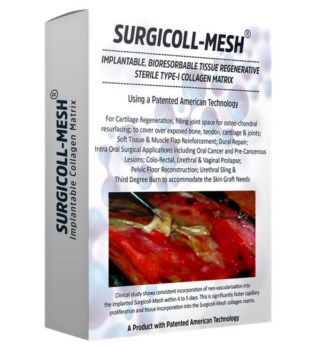
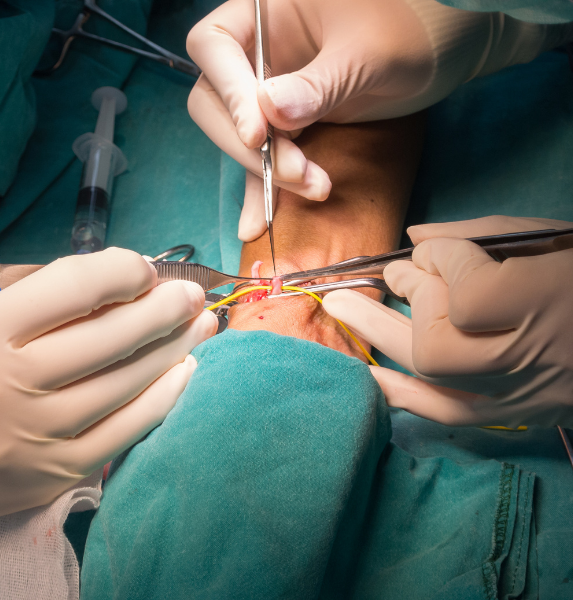
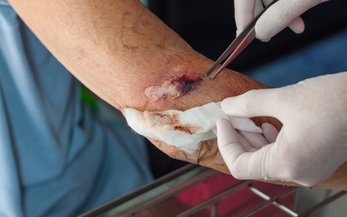

Advanced Surgical Reinforcement Technology
Redefining Surgical Reinforcement with Advanced Regenerative Support
Surgicoll Mesh is an advanced surgical reinforcement solution developed to support modern reconstructive and regenerative procedures across multiple medical specialties.
Download Brochure
About
Surgicoll Mesh
Implantable, Bioresorbable Tissue Regenerative Sterile Type-I Collagen Matrix
Surgicoll-Mesh is a bio compatible collagen mesh that is flexible, strong yet soft collagen membrane that is supple when hydrated and handles like natural tissue; it readily conforms to the surgical site upon application and is easily sutured.
Surgicoll-Mesh is a reconstituted type-I collagen mesh free of contaminants like lipids, elastin and other immunogenic proteins. The collagen used in Surgicoll-Mesh is based on patented technology that ensures high purity type-I collagen.
Surgicoll-Mesh is Bio-compatible and sterilized Type-1 collagen matrix for soft tissue & muscle flap reinforcement, dural repair, colorectal, urethral & vaginal prolapse, pelvic floor reconstruction and orthopaedic procedures.
Our Vision
“To ensure healthy and effective healing and tissue regeneration with high purity and biocompatible collagen products.”
Our Mission
"Become the leader in the advancement of collagen products manufacturing sector globally."
Clinically Effective Through
Dual Action Technology
Surgicoll-Mesh delivers unmatched clinical performance by combining biocompatibility and bioactivity — a combination no other biomatrix can replicate.
Made of native, un-crosslinked pure Type-I collagen (>97% pure), completely free of immunogenic proteins, lipids, elastin, Type-III collagen, and glycosaminoglycans. Parallel, organized fibers mimic native skin structure with ~20µm porosity — ideal for cell infiltration and tissue regeneration.
The collagen is phosphorylated, creating unique cell signal transduction capabilities. This attracts undifferentiated stem cells and converts them to specific cell lines for tissue repair. Improved cell signalling produces the molecules required for repair and regeneration — a feature unique to Surgicoll-Mesh.
Collagen phosphorylation attracts cells, regenerates tissue, and stimulates blood capillaries and granulation within just 4 to 5 days after application. This clinically proven rapid neo-vascularization is not shown with any other biomatrix product.
Ref: Acta Medica International, 3(1), 146 (2016)
Why Other Products Fall Short
Competing products rely on contaminated, cross-linked, or intact tissue membranes — all of which compromise bioactivity and clinical outcome.
Advanced Collagen Technology for Faster Healing and Tissue Regeneration
Bioactive collagen promotes healing, regeneration, vascularization, and superior outcomes.

Accelerating Healing Through Advanced Collagen Technology
Promotes rapid vascularization, tissue regeneration, and superior healing outcomes.

Conventional Collagen Products Limit Natural Tissue Regeneration
Cross-linked contaminants reduce bioactivity, slowing healing and cell response.

Ultra-Pure Type-I Collagen for Enhanced Cellular Regeneration
Improves cell signaling, promotes repair, regeneration, and faster recovery.
Case Study: Surgicoll® Mesh in Complex Reconstructive Surgery
Case Study: Surgicoll® Mesh in Complex Reconstructive Surgery
What Makes Surgicoll Mesh Different?
Surgicoll® Mesh is carefully designed to provide an optimal balance between strength, flexibility, and biological compatibility.
Reinforcing Tissues
Reinforcing weakened or damaged tissues during reconstructive procedures.
Tissue Regeneration
Supporting tissue regeneration and healing throughout recovery.
Surgical Precision
Enhancing surgical precision and procedural adaptability.
Complex Reconstruction
Managing complex reconstructive procedures effectively.
Key Features of Surgicoll® Mesh
- Advanced Tissue Reinforcement
- Regenerative Healing Support
- Multi-Specialty Applications
- Flexible & Adaptable Design
- Reliable Surgical Performance
- Enhanced Structural Stability

Surgical Applications
Surgicoll® Mesh is clinically adaptable for a broad range of reconstructive and regenerative surgical procedures.

Soft Tissue Reinforcement
Used as reinforcement support for weakened or repaired soft tissues during reconstructive procedures.

Tendon & Muscle Repair
Supports tendon anchorage, muscle flap procedures, and tendon damage repair applications.

Advanced Wound Management
Supports tissue coverage and reinforcement in complex wound healing environments.
Advancing Surgical Reconstruction with Confidence
Surgicoll Mesh combines innovation, reliability, and clinical adaptability to support modern surgeons in delivering effective reconstructive and regenerative care.
Request Information